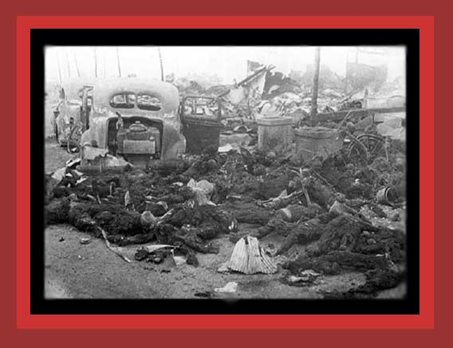

| During World War II the United States indiscriminately bombed enemy cities, the A-bombs dropped on Hiroshima and Nagasaki being the worst. About 105,000 Japanese were killed in Hiroshima or died from injuries and radiation afterwards, 60,000 in Nagasaki. An additional 183,000 Japanese were killed in conventional bombing of other cities. When the indiscriminate bombing of German, Rumanian, and Hungarian cities is included, the total democide is about 375,000 civilians. Americans have yet to face up to the United States having done the same thing that it officially protested as barbaric, illegal, and inhumane when Japan and Germany similarly bombed urban areas before American involvement in the war. In this photograph is shown some of the bodies, many burned beyond recognition, from the American fire bombing of Tokyo. Documentation: Statistics of Democide. Source: Haha to Ko de Miru Tokyo Daikuushuu, Kusanone Publishing Co., 3-4-13 Otsuka Bunkyo-ku, Tokyo, Japan 112-001. Thanks to Ray Wilson for sending me this photo. |